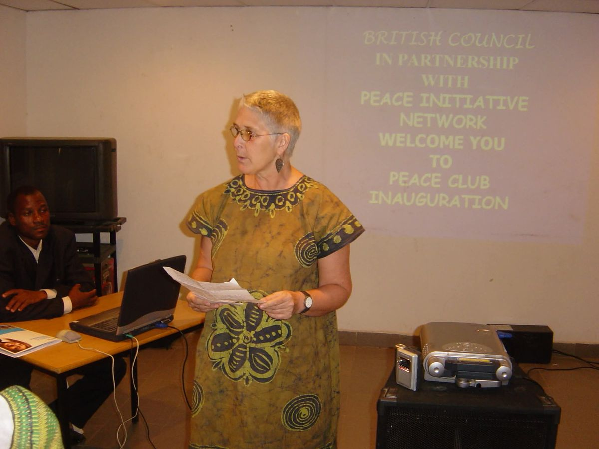
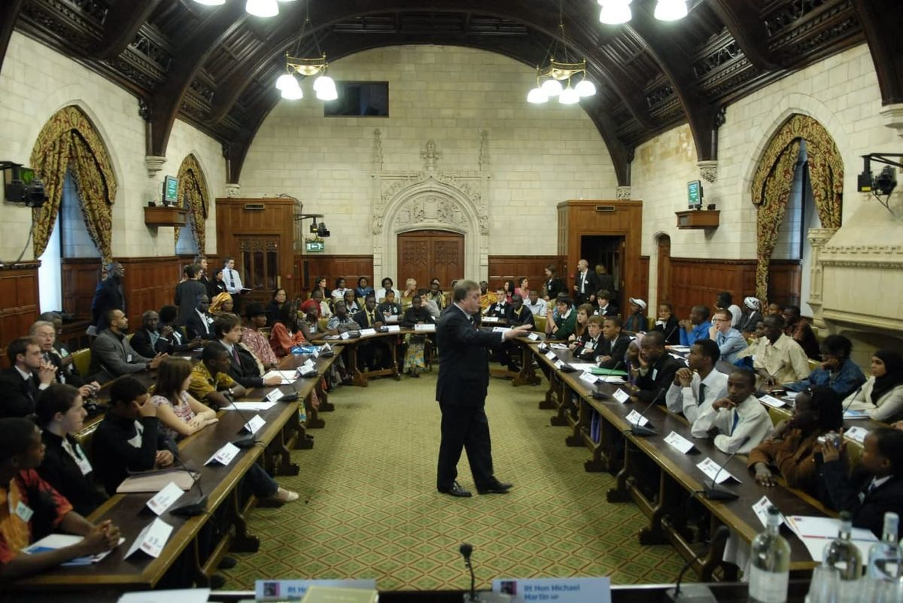

Building peace with young people, one skill at a time.
Peace Initiative Network UK brings 20 years of PIN peacebuilding to young people in South London. We combine robotics and IT, conflict and thinking skills, and long-term mentoring, so they can stay safe, get skills and move forward.
About us
A UK home for the Peace Initiative Network
Peace Initiative Network UK is part of the wider Peace Initiative Network, a non-partisan, non-profit peacebuilding organisation based in Kano, Nigeria. For 20 years, PIN has helped young people choose non-violent ways to handle conflict, starting with the Peace Club it founded in Kano in partnership with the British Council. We bring that experience to London.
We are starting in Peckham, working with local schools, youth centres and families. When the model is proven, we plan to grow across South London.
We are a not-for-profit company. Every pound we receive goes towards our mission, and none is paid out as profit.
Our network's track record
20 years of Peace Clubs
The Peace Club began on 27 May 2006 in Kano, Nigeria, as a partnership between PIN and the British Council. It helps young people build leadership, problem-solving and life skills, and understand peers from different backgrounds.


Figures and photographs provided by Peace Initiative Network, Nigeria. PIN UK is a new, separate company that builds on this work in London.
Our programme
The PIN Blend
One joined-up journey, not a one-off workshop. Each part does a different job.
Robotics and IT hook
Hands-on building, coding and problem-solving that young people want to come back for.
Conflict and thinking skills
Structured sessions on managing anger, pausing before reacting and resolving disagreements.
Social skills
Communication, teamwork and confidence, practised through group projects.
Mentoring for six months or more
A trusted, trained adult who meets with each young person regularly over the long term.
Families and progression
Keeping parents and carers involved, and linking young people to recognised awards, training and next steps.
The design draws on approaches that the Youth Endowment Fund's evidence toolkit rates as promising for reducing youth violence, such as cognitive behavioural and social skills work and sustained mentoring. We will measure our own results and publish what we learn.
Peckham first
Pilot with local partners in Southwark, learning what works.
Measure honestly
Track attendance, skills and wellbeing, and share the results openly.
Grow across South London
Expand to nearby boroughs once the pilot shows results.
Governance
Accountable from day one
PIN UK is led by a board of directors, with independent non-executive directors overseeing an executive director. An advisory council connects us to the wider Peace Initiative Network.
- Not-for-profit company limited by guarantee, registered in England and Wales
- Profits cannot be distributed to members
- Independent non-executive oversight
- Safeguarding is central: everyone working with young people will be DBS-checked and trained
Get involved
Help us launch in Peckham
Schools and youth centres
Host a pilot group or refer young people who would benefit.
Mentors and volunteers
Give a few hours a month. We will provide training and DBS checks.
Funders and partners
Help us fund the pilot, equipment and mentor training.
Board members
We welcome UK-based people with experience in governance, finance or safeguarding to join as non-executive directors.
Contact
Let's talk
Whether you run a school, want to mentor or are interested in funding, we would love to hear from you.